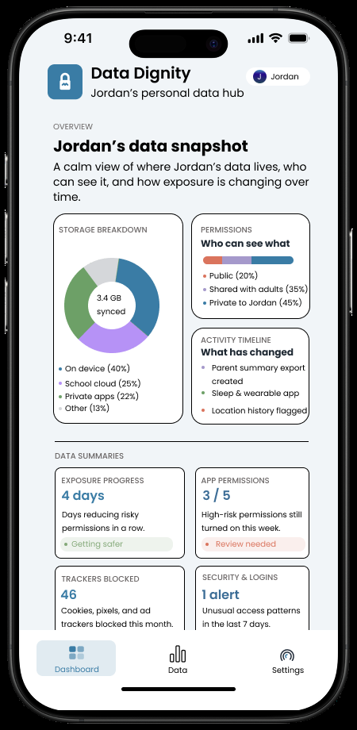
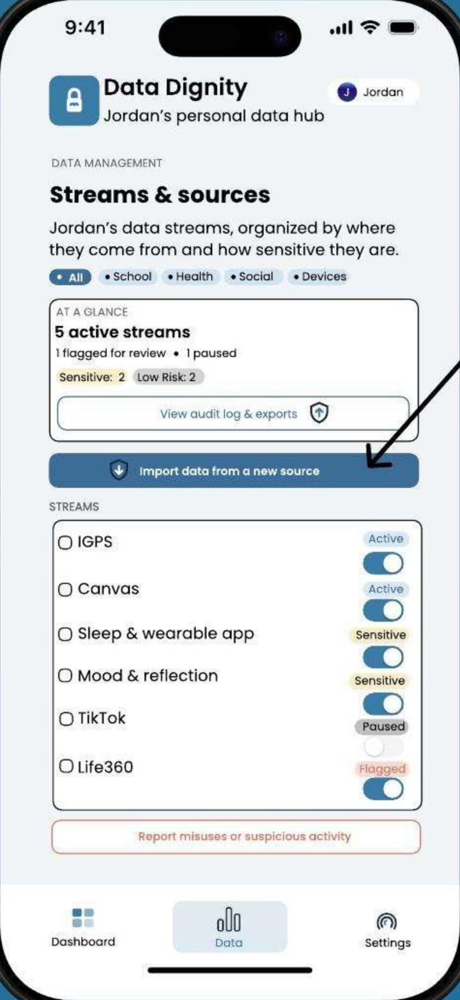
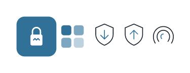
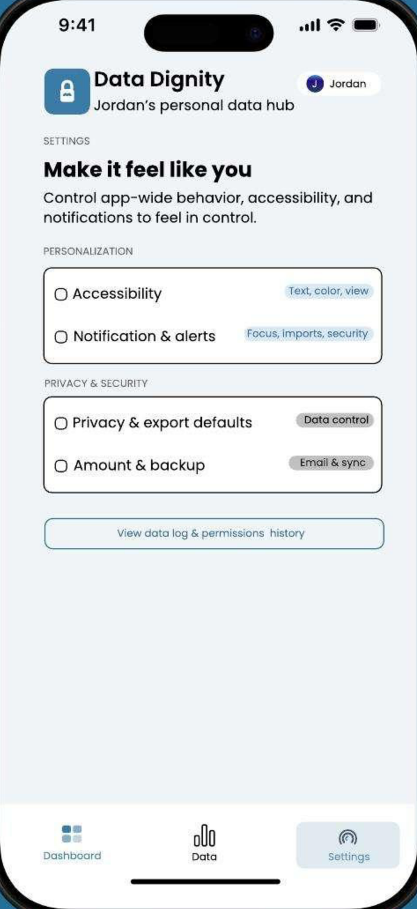
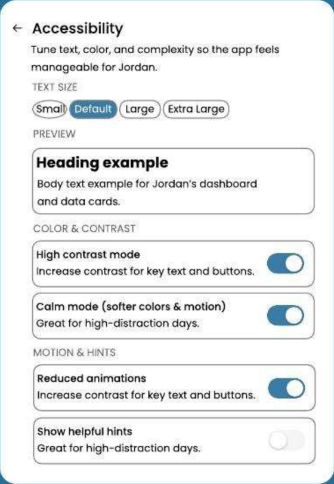
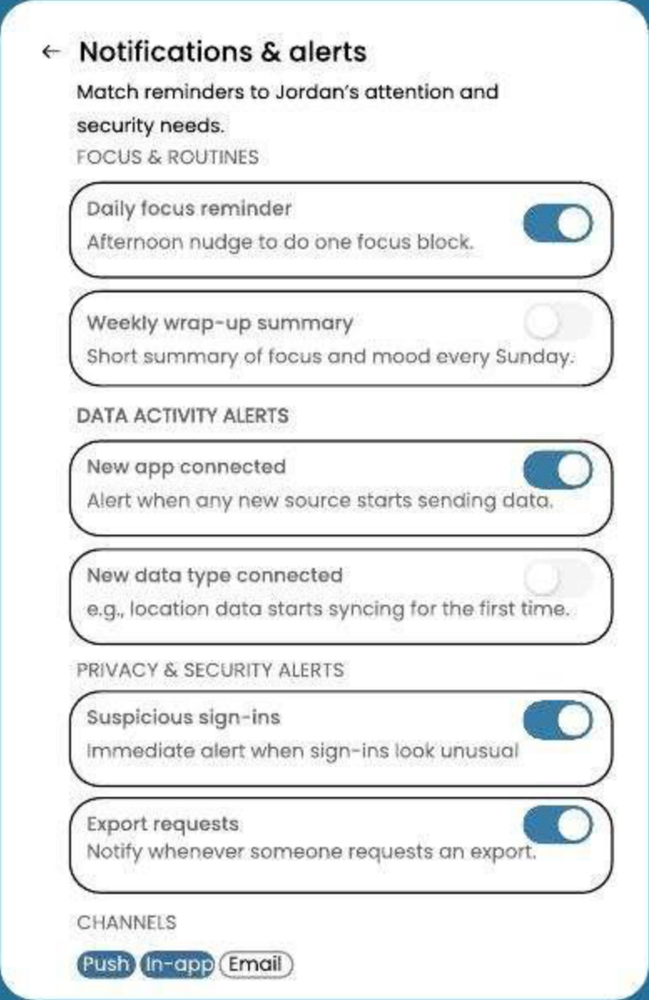
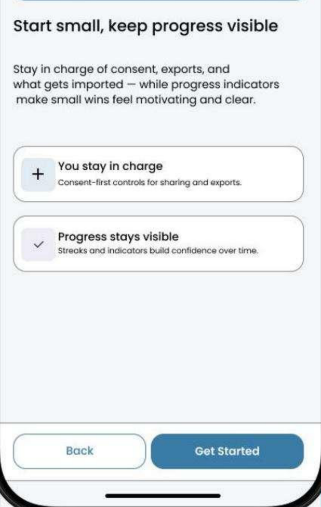
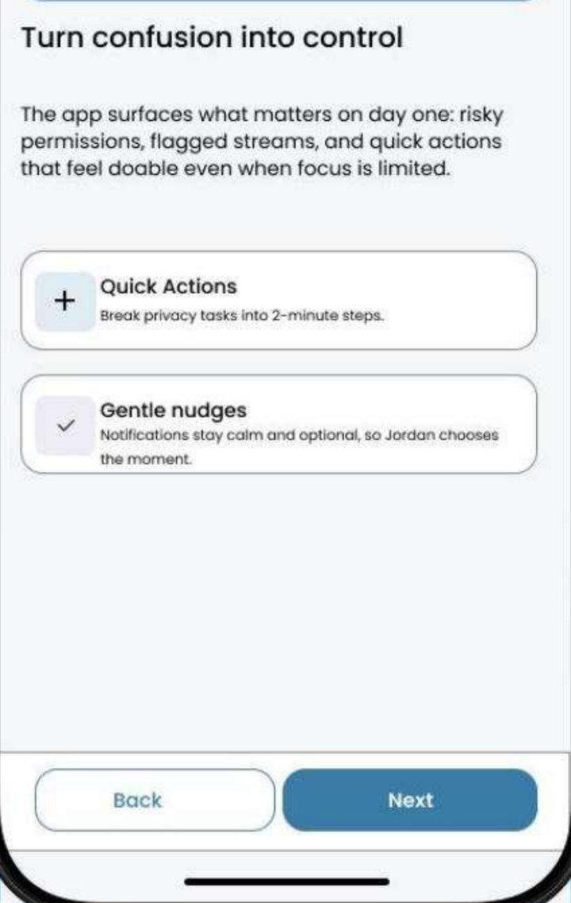
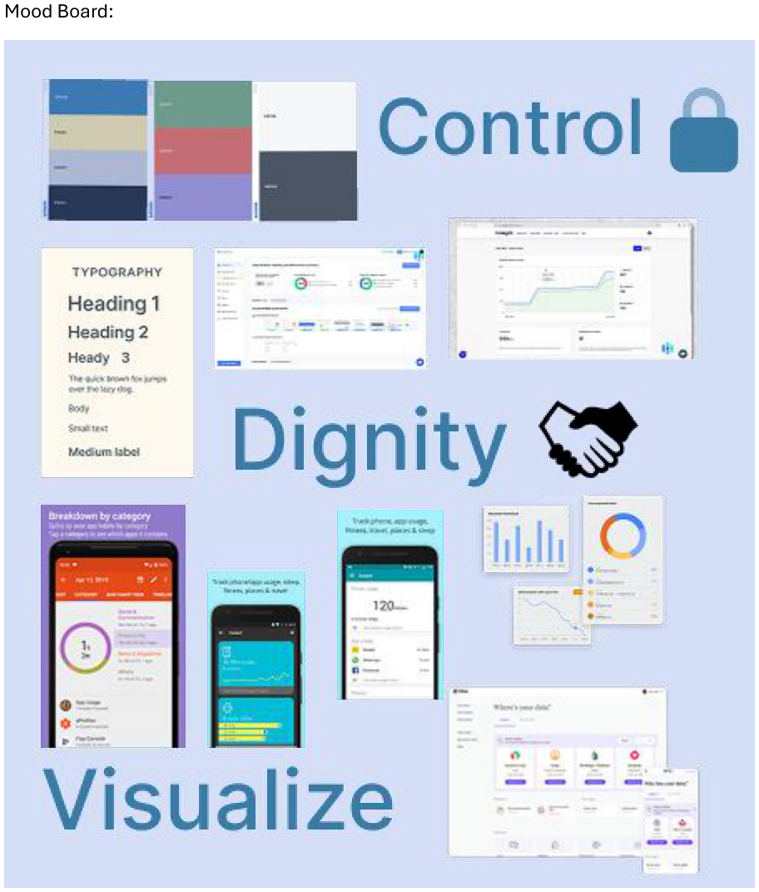

In a digital-dignity world, people legally own their data. Jordan already lives across school, health, and social apps every day.
← All work
HER-V500 · Fall 2025 · Inclusive product
Data Dignity
Personal data is collected constantly and stored everywhere. Ownership on paper is not the same as control in a Tuesday afternoon. This concept gives one person — Jordan, a teen who needs an ADHD-friendly view — a snapshot of where data lives, who can see it, and what to do next without panic.


Ownership is not understanding. Data hides behind technical language. Privacy screens show everything at once and raise the alarm.
A calm hub: look first, act second. Three spaces — dashboard, data, settings — and one goal on the screen you are on.
The problem
How might we return data control to individuals without overwhelming them? The legal story says you own the file. The interface still asks you to parse a tracker log, a permissions tree, and a red banner before breakfast. For younger users especially, managing privacy feels like a test they are already failing.
Privacy products often fail in the same way: they show everything. For someone with ADHD, a wall of equal-weight information is not just ugly — it is unusable. Jordan still needs the truth: what is public, what is shared with adults, what changed this week, which high-risk permissions are still on. The job was to make that truth scannable in a few seconds, then point to one next action.
Who it had to serve
I designed for Jordan: fifteen, diagnosed ADHD, moving through school apps, wearables, and social feeds. They want independence. They lose the thread when a screen asks for twelve decisions. The use case I wrote was blunt — manage personal data in a structured way so they can stay focused, feel a little accomplished, and worry less about what they forgot.
Two sources kept the work honest. Bakken’s work on ADHD-friendly digital tools asked for fewer distractions, more structure, and praise that is not a carnival. Wollberg’s review of inclusive ADHD research in HCI added the rest: one goal per section, no open-ended prompts that spike anxiety, autonomy over how loud the system is allowed to be.
-
15 · ADHD · school, health, social
Jordan
Wants control without a lecture. Needs systems that are predictable, easy to scan, and willing to wait. A 2-minute task beats a privacy course.
-
Goals, not a feature list
What has to be true
See where data lives. Know who can see it. Make one small, safe change. Dense menus, vague permissions, and alerts without context are the failure mode.
-
01
Minimize distractions.
Clean cards. Low-saturation color. The same nav on every screen. No animated background competing with the snapshot.
-
02
One goal per section.
Breadcrumbs and a single primary action. If Jordan has to guess what this screen is for, the IA already lost.
-
03
Control over volume.
Custom layout, notification frequency, calm mode. Autonomy lowers anxiety more than another “you should review this” toast.
-
04
Motivation without a siren.
Streaks and “getting safer” are gentle. Burnt sienna marks risk. Color is never the only signal — an icon or a label travels with it.
What I owned
This was a solo inclusive-product brief: persona and research notes, a mood board, a color system, custom icons, and a hi-fi mobile prototype covering onboarding, dashboard, data streams, revoke, settings, and notifications. I did not invent a live vault. The Figma file is the artifact.
The product
Three spaces, on purpose. Dashboard is “understand what’s happening.” Data is “organize and control sources.” Settings is “change how the system behaves.” Observe first, act second. That split is the information architecture.

A snapshot, not a control panel
Home answers three questions in order: where is the data, who can see it, what changed. A donut for storage. A bar for public / shared with adults / private. A short activity list. Then four cards that imply a next step — “3 / 5 high-risk permissions still on” is a prompt, not a grade. Quick actions stay at two minutes: review one toggle, log how it felt.
Streams you can pause
Data is filtered — All, School, Health, Social, Devices — so Jordan can look at one pile. Canvas is active. TikTok is paused. Life360 is flagged. Importing a source is a form, not a hunt through Settings. Revoking access is a separate, slower flow: what stops now, what happens to history, are you sure. Accidental revoke should be hard. Trust is the point.


Make it feel like you
Settings is not a junk drawer. Text size has a preview. High contrast and calm mode sit together. Reduced animation is a toggle, not a buried iOS setting. Notifications match attention: a daily focus reminder can be on; a weekly wrap-up can be off. The in-app copy says “Tap when ready — no rush.” That sentence is a design decision.


Three screens, then a small start
Onboarding has to pass a three-second skim: what this is, how you use it, what to do first. “Own your data” is the purpose. “Turn confusion into control” is the method. “Get started” is review one risky permission. Progress indicators come after the first win, not before.

Design decisions
-
01
Snapshot over settings.
The home view is an overview, not a control panel. Storage, permissions, and activity sit as separate cards so Jordan can finish one thought at a time.
-
02
Metrics that imply a next step.
“3 / 5 high-risk permissions still on” is more useful than a generic security score. The number is a prompt, not a grade.
-
03
Calm, not cute.
Cerulean for ownership. Asparagus for safer. Burnt sienna for risk — never a pure alarm red. Dual encoding so color is never the only message. Poppins on the screens because it stays friendly at small sizes; the portfolio stays in its own type.
-
04
Three destinations, not a maze.
Dashboard, Data, Settings. Cards, toggles, chips, bottom sheets. Repeat the pattern so the next screen does not have to be relearned.
How I got there
The mood board was Control, Dignity, Visualize — lock, handshake, charts that do not shout. I looked at data-manager and deletion tools and kept the ones that felt approachable. Then a palette written for Jordan: soft neutrals as ground, cerulean reserved for the thing you can tap, burnt sienna for urgency without panic.
The dashboard sits on an 8-point grid. Text is sized for a phone, targets are large enough to hit, the layout reads top to bottom for a screen reader. Interaction patterns stay boring on purpose: a card, a toggle, a sheet. Revoke is the one place I slowed the user down on purpose.

-
Frame
Pick Jordan
Teen, ADHD, scattered apps. The brief was agency without a second job.
-
Read
Structure first
Bakken and Wollberg: fewer distractions, one goal, user-controlled volume.
-
System
Calm language
Palette, icons, 8-pt grid, Poppins. Color always travels with a label.
-
Build
Three spaces
Onboarding, dashboard, streams, settings. Look first, act second.
What I made
A hi-fi mobile prototype of a personal data hub: a calm snapshot, a stream list you can pause or revoke, accessibility that is not an afterthought, and notifications that explain the next step. It can scale toward families and caregivers. It is not a shipped vault — the prototype is what I have to show.
- Scope
- Solo inclusive product
- Persona
- Jordan, teen, ADHD
- Spaces
- Dashboard, Data, Settings
- Output
- Interactive Figma proto
What I learned
Accessibility is not a later coat of contrast. If calm mode, text size, and reduced motion live in Settings from the start, the rest of the UI can stay quiet. The other lesson is sequential: a dashboard that asks for a decision on load will lose Jordan. Show the picture. Offer a two-minute action. Let revoke be slow.
What I would do next is the honest gap. This has not been tested with teens who use ADHD accommodations. I would sit someone with two tasks — “What needs your attention today?” and “Turn off something that feels too public” — and I would design the empty and error states. Privacy UIs are full of both.